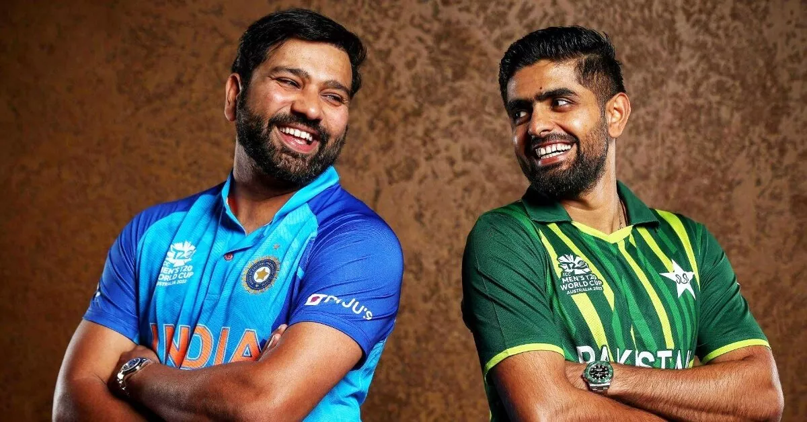

India vs Pakistan Cricket World Cup 2023

India and Pakistan have a long-standing rivalry when it comes to cricket. The two countries have been playing against each other for decades, and every game between them is watched by millions of fans. The India vs Pakistan clash is one of the most highly anticipated matches in any cricket tournament, and the upcoming Men's ODI World Cup is no exception.

One of the most memorable India vs Pakistan matches was the ICC World T20 final in 2007. The match took place in Johannesburg, South Africa, and India won by just five runs. It was a thrilling game, and the tension was palpable throughout. The victory was especially sweet for India, as they had lost to Pakistan earlier in the tournament.

Another example of the intense rivalry between India and Pakistan is the 2011 World Cup semi-final. India won the match by 29 runs and went on to win the tournament, but the victory was bittersweet. The match was played in Mohali, India, and tensions were high in the lead-up to the game. The Indian government had even increased security measures, as there were concerns about possible attacks from militants.

The India vs Pakistan clash is not just about cricket - it's also about national pride. The game is seen as a battle between two nations, and winning or losing can have a significant impact on the morale of the country. The 2017 Champions Trophy final between India and Pakistan is a perfect example of this. Pakistan were the underdogs going into the match, but they pulled off a stunning victory, winning by 180 runs. The win was seen as a major boost for Pakistan, and the celebrations lasted for days.
Conclusion
The India vs Pakistan cricket rivalry is one of the biggest in the world of sports. The two countries have a long and storied history when it comes to cricket, and every match between them is watched by millions of fans. The upcoming Men's ODI World Cup match between India and Pakistan is set to be one of the highlights of the tournament, and the excitement is already building.
- India and Pakistan have a long-standing cricket rivalry
- The India vs Pakistan clash is about more than just cricket - it's about national pride
- Every match between India and Pakistan is highly anticipated and watched by millions
Curated by Team Akash.Mittal.Blog
Curated by Team Akash.Mittal.Blog
Share on Twitter Share on LinkedIn